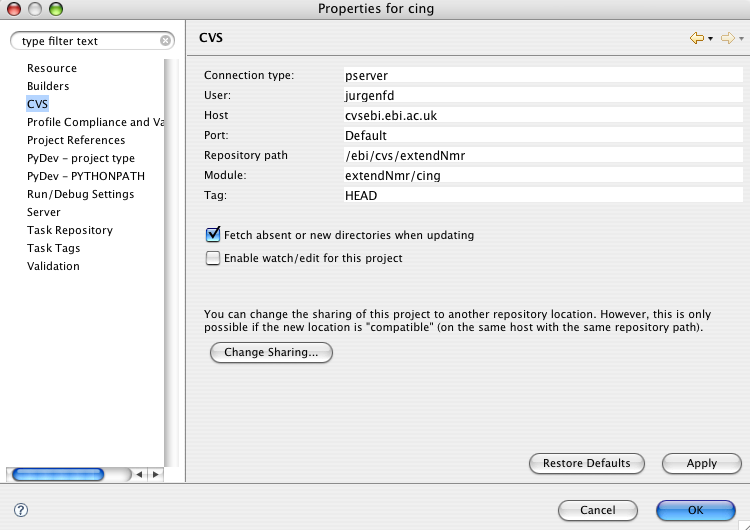
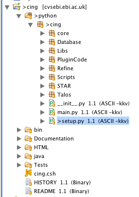
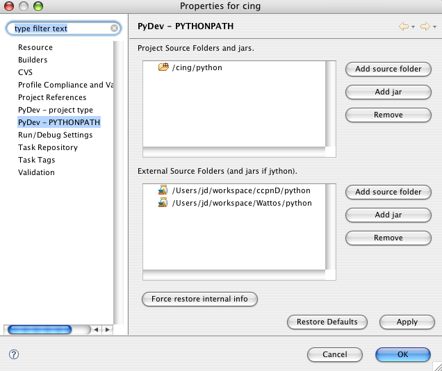

Install Fink Make sure you have the unstable trees in your fink.conf too. I had to add:
/unstable/main and /unstable/fink
Do:
fink selfupdate
.
Install Biggle plotting utilities Do:
fink install biggles-py25
Note that this also installs the python 2.5 plotlib and numeric dependancies.
Install IPytho
Do:
fink install biggles-py25
Note that this also installs the python 2.5 plotlib and numeric dependancies.
Register with sourceforge to get a user account. Check out the CING project from CVS.

The project tree with the python code expanded should look something like:

Add the local python dir to your PYTHONPATH inside eclipse. The ccpn is mandatory too.
The wattos is really optional.
